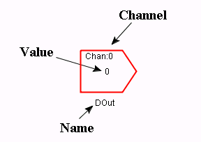

Note: To use real IO you need to disable Simulator Mode.

A digital output is a boolean variable that is connected to a digital output channel specified by the channel name. The channel name is usually an integer. What the digital output actually does is up to the current Custom IO.
A digital output can only be changed by the application.
The digital output is colored red when the value is false, green when the value is true, and black if no value has yet been assigned to it since the beginning of the execution.
None